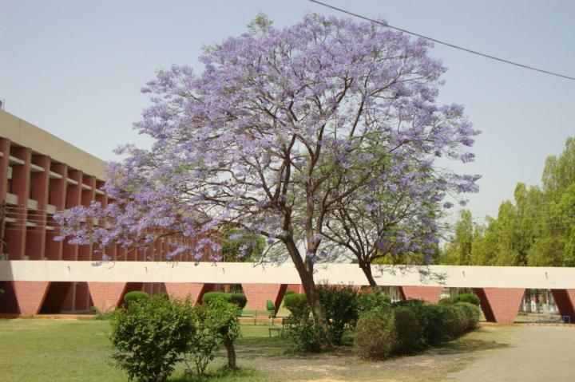
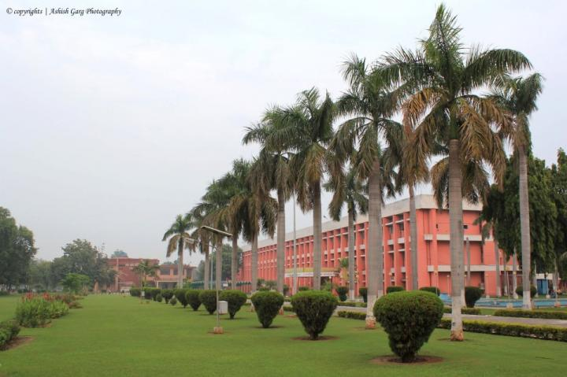

The Central Government in consultation with the Planning Commission had sanctioned a scheme of
establishment of Regional Engineering Colleges under the Third Five Year Plain in order to expand
the facilities for technical education in the country during the plan period.
The w:st="on"Regional Engineering College, Kurukshetra was one of the seventeen colleges in the country.
Vide letter No. 16-4/60-T.5, dated the 26th February, 1962 from the Secretary to the Government of India, Ministry of Scientific Research and Cultural Affairs, New Delhi, it was established in the year 1963 as a joint and cooperative enterprise of Govt. of India and the State Government of Haryana to serve the State of Haryana and the rest of the country for imparting technical training to youth and for fostering national integration. Its objective was to provide instructions and research facilities in various disciplines of engineering and technology and the advancement of learning and dissemination of knowledge in each such discipline.
The first admission to five year B.Sc. (Engg.) degree course was made by the Institute in July, 1963 at Punjab Engineering College , Chandigarh and Thapar Institute of Engineering & Technology, w:st="on"Patiala , with an intake of 60 students at each place. This was repeated in July, 1964 also. The Institute started functioning on its present campus at Kurukshetra from the year 1965-66. The students were admitted to the first year of the five year integrated B.Sc.(Engg.) degree courses in Civil, Electrical and Mechanical Engineering. In 1967-68, M.Sc. (Engg.) degree courses in Civil, Electrical and Mechanical Engineering were introduced. In 1971-72, a degree course in Electronics & Communication Engineering and a Post-graduate Diploma Course in Scientific Instrumentation were started. In 1976-77, part time M.Sc. (Engg.) degree courses in Electronics & Communication Engineering and Instrumentation Engineering were started. The first registration for the degree of Doctor of Philosophy in the Faculty of Engineering and Technology was done in July, 1967.
The Institute switched over to the four year B.Tech.Degree course with effect from 1985-86. The Course has since been designated as Bachelor of Technology (B.Tech.). The M. Sc.(Engg.) degree in various disciplines has since been renamed as M.Tech. degree with effect from the session 1983-84. In 1987-88, B.Tech. degree course in Computer Engineering and M.Tech. degree Course in Electronics Engineering were started. In 1989-90, M.Tech. degree course in Water Resources Engineering was started in the Department of Civil Engineering. A special two semesters M.Tech. degree course in Instrumentation for candidates holding P.G. Diploma in Scientific Instrumentation has been introduced from January, 1988.
Three year Special Degree Course, 'Bachelor of Engineering' for in-service diploma holders was introduced from the session 1982-83 in Civil, Electrical and Mechanical Engineering. This course was fully funded by Govt. of Haryana. The Govt. of Haryana has discontinued the course w.e.f. 2001-02.
During the period 1963 to 2001, there have been considerable achievements in the academic as well as development areas.
The REC Kurukshetra was registered under the Societies Registration Act XXI of 1860 on 25th April, 1964.
Vide letter No. F.9-10/2002-U.3 dated 26.6.2002 the Govt. of India, Ministry of Human Resource Development, New Delhi has upgraded the REC Kurukshetra to National Institute of Technology, Kurukshetra with the status of w:st="on"Deemed University w.e.f. 26.6.2002. The NIT Kurukshetra has also been registered under the Societies Registration Act XXI of 1860 on 9th April, 2003. The new Memorandum of Association has also been formulated under the guidance of the Ministry of Human Resource Development.
National Institute of Technology Kurukshetra, Haryana is a premier Technical Institute of the region. The institute started working as Regional Engineering College, Kurukshetra in 1963. Like other Regional Engineering Colleges of India this institution too, had been a joint enterprise of the State and Central Governments. This Institute was conferred upon status of Deemed University on June 26, 2002. Since then it has been renamed as National Institute of Technology, Kurukshetra.
The Institute started functioning in its present campus at Kurukshetra in 1965-66 with 120 students admitted in the first year of the Five-Year Courses of study for the B.Sc. (Engg.) Degree in Civil, Electrical and Mechanical Engineering. The annual intake was increased to 250 students in 1966-67. B.Sc. (Engg.) degree courses in Electronics and Communication Engineering was added in 1971-72. in 1967-68 M. Sc. (Engg.) degree courses in Electronics and Communication Engineering was added in 1971-72. In 1967-68 M. Sc. (Engg.) degree courses in Civil, Electrical and Mechanical Engineering and in 1971-72, a Postgraduate diploma in Scientific instrumentation were also started. In July, 1976 Part-Time M. Sc. ( Engg.) degree courses in Electronics and Communication Engineering and instrumentation were started. The First registration for the degree of Doctor of Philosophy in the Faculty of Engineering and Technology was made in July, 1967.
The Institute changed over to the 4-year B.Tech. Degree courses with effect from the academic year 1985-86. The new courses was designated as B. Tech. The annual intake in B.Tech programme at present is 540.
Special three-year degree courses in Civil, Electrical and Mechanical Engineering, designated as 'Bachelor of Engineering for in-service engineering diploma holders were introduced from the session 1982-83. However, these courses were discontinued by the Govt. of Haryana in the year 2000.
The 2-year M.Sc. (Engg.) degree courses in various disciplines were redesignated as M. Tech. degree courses with effect form the session 1983-84. Now the duration of the Courses is 2 years. The annual intake in M.Tech programme at present is 165.
From the session 1987-88, the Institute introduced a four-year B. Tech. degree programme in Computer Engineering with an intake of 30 students. The institute also introduced a full time M. Tech. Degree courses in Electronics and Communication Engineering with and intake of 13. The intake of B. Tech. Electronics and communication Engineering degree courses was increased from 30 to 60 from the session 1987-88. Full time M. Tech. degree courses in Water Recourses (Civil Engineering Dept.) was introduced in 1989-90.
In the session 2006-07, the Institute introduced a two-year MBA programme and two four-year B. Tech. degree programmes in Information Technology and Industrial Engineering Management. From the session 2007-08, the Institute started a three-year MCA programme. Each of these newly introduced courses has intake of 60 students.
n addition to providing instructions in various disciplines of Engineering and Technology at the Undergraduate and Postgraduate level, the Institute offers excellent facilities for advanced research in the emerging areas of Science and Technology. The syllabus and the curricula are constantly being updated to meet the growing demands and need of the country in different areas of technology. The infrastructure is geared to enable the Institute to turn out technical personnel of a high quality.